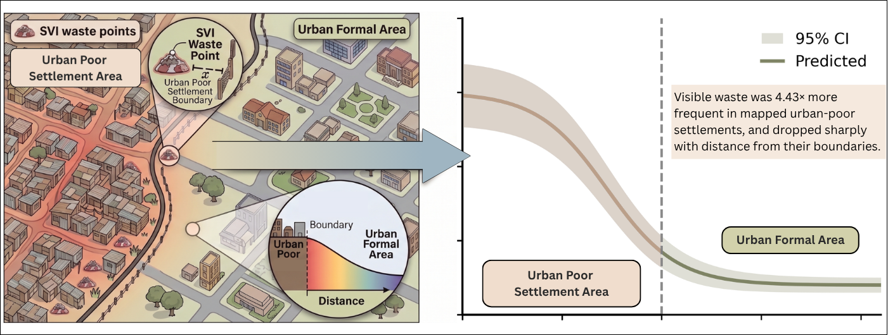
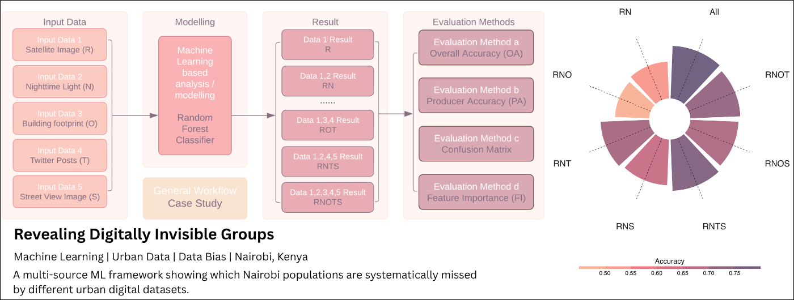
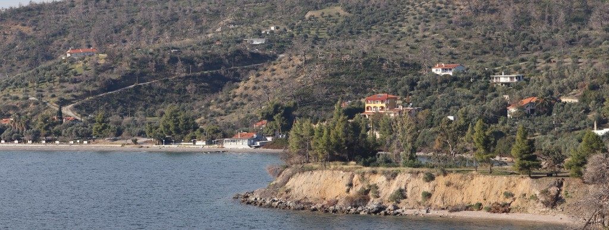
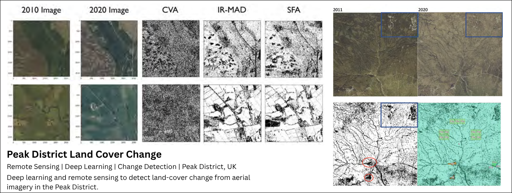

No projects with this tag yet.
Mapping Urban Waste with Computer Vision
Nairobi, Kenya
Urban Planning · Computer Vision · Multimodal AI
Developing an AI-based urban monitoring framework to map visible waste and identify spatial gaps in conventional urban data.

AI for Urban Land-Use Mapping
Nairobi, Kenya
Revealing Digitally Invisible Groups
Urban Planning · Machine Learning · Multimodal Data
Combining satellite, building, social-media and street-view data to examine how different urban environments are represented in AI-based land-use classification.

Predicting Internet Connectivity
Kenya & Mexico
Urban Planning · Machine Learning · Spatial Analysis
Testing how well machine-learning and spatial models predict internet connectivity within cities and across countries.
Estimating Population from Satellite Imagery
Gaza
Population · Computer Vision · Remote Sensing
Using computer vision on satellite imagery to detect tents and estimate population where conventional data are scarce.
Move the slider to show or hide detected tent points.
Measuring How Policy Changes Migration
Chile–United States & Turkey–Germany
Detecting Migration Surges with Digital Trace Data
Mobility · Machine Learning · Digital Trace Data
Using digital trace data to measure how policy changes shift cross-border migration, including onward flows about 240% higher for Chile→US and 122% higher for Turkey→Germany than synthetic controls.
📄 Report
Submitted to International Migration Review
Detecting Wildfires from Satellite Data
Euboea, Greece
Environment · Remote Sensing · Machine Learning
Designing a satellite-based system for early wildfire detection, and assessing forest management and community preparedness.

Detecting Land-Cover Change
Peak District, United Kingdom
Environment · Remote Sensing · Spatial Analysis
Using deep learning and satellite imagery to detect land-cover change.

National Conversation
United Kingdom
Funded by the BBC · Ongoing
Urban Planning · Spatial Analysis · NLP
Linking the places people like and dislike to neighbourhood deprivation, local amenities, and residents’ comments.
______________________________________
| __________________________________ |
| | | | _o /
| | National Conversation | | /\_
| | [=======> ] 48% | | _/\_> *click*
| | | | / \
| |__________________________________| |
|______________________________________|
||
/__\
______________________________________
| __________________________________ |
| | | | _o\
| | National Conversation | | /_/
| | [=========> ] 63% | | <_\_ *clack*
| | | | / \
| |__________________________________| |
|______________________________________|
||
/__\
Hard at work generating the results.